1. Introduction
Flow matching trains a neural network to predict a velocity for any point at any time. Following those velocities from random Gaussian noise moves the whole cloud of points into the shape of a target distribution. I trained a small MLP on 2D point coordinates, generated new point clouds with forward Euler steps, animated the learned transport using my own logo as the target, and measured how the number of Euler steps trades sampling cost against distribution quality.
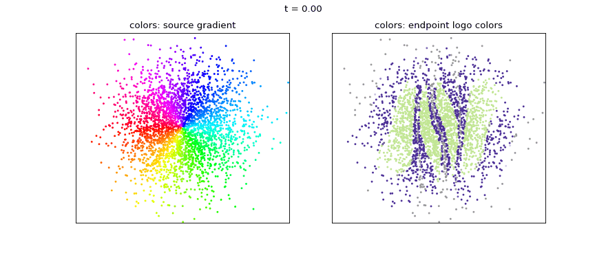
| Measurement | Result |
|---|---|
| Model (both parts) | MLP 3 → 128 → 128 → 128 → 2, SiLU, 33,794 parameters |
| Part 1 training (6 clusters, 20,000 steps) | 24.2 s; final loss 4.69 (does not approach 0, as expected) |
| Part 1 learned paths (100 Euler steps) | mean excess length 0.329 (straight training lines: exactly 0) |
| Part 2 training (logo, 50,000 steps) | 54.9 s; final loss 2.83 |
| Part 2 particles that end on the logo | 89.8% at 100 steps |
| Part 2 histogram TV distance to the target | 0.980 (1 step) → 0.182 (10) → 0.120 (25) → 0.104 (100); noise floor 0.047 |
Beyond about 25 steps, extra steps barely change the result: the remaining gap to the target comes from the learned velocity field, not from the Euler step size.
2. Method
Time runs from t = 0 (noise) to t = 1 (data). Each training example pairs a noise point x₀ ~ N(0, I) with a target point x₁. Because both are drawn independently, the pairing is random. A time t ~ U[0, 1] is drawn for each pair.
Velocity MLP v_θ(x, t)
Input: the point's 2 coordinates and t (3 numbers). Output: a 2D velocity. Three hidden layers of width 128 with SiLU activations (33,794 parameters). Adam, learning rate 10⁻³ with cosine decay to 10⁻⁵, batch size 256. The squared error is summed over x and y and averaged over the batch.
Forward Euler, fixed-grid histograms
Generation starts from fresh Gaussian samples that were never used in training, and the sampler never receives target endpoints. Distribution quality is the total-variation (TV) distance between histograms of generated points and independent target samples on one fixed grid (see Part 2, Task 3).
Device: Apple Silicon Mac (macOS 27.2.1, arm64), CPU only, 4 PyTorch threads. Python 3.14.0; PyTorch 2.10.0; NumPy 2.4.2; Matplotlib 3.10.8; Pillow 12.1.1. Seeds: 0 (training), 1 (visualization samples), 2 (Part 1 generation), 3 (Part 2 animation), 4 (held-out evaluation noise), 5 (independent target samples). Measured runtimes: Part 1 notebook 29 s in total (training 24.2 s); Part 2 notebook 95 s in total (training 54.9 s, GIF rendering 12.5 s). All runs used a CPU only.
3. Part 1: Learning a 2D flow from scratch
Task 1. Source, target, and training pairs
Source: standard 2D Gaussian. Target: six equally weighted Gaussian clusters. To sample a point, I pick a cluster c uniformly from 0–5, place its center at 2.5·(cos 2πc/6, sin 2πc/6), and add 0.25·N(0, I) noise. Both distributions use the same coordinate units, and the target lies within about [−3.3, 3.3], a similar scale to the source.
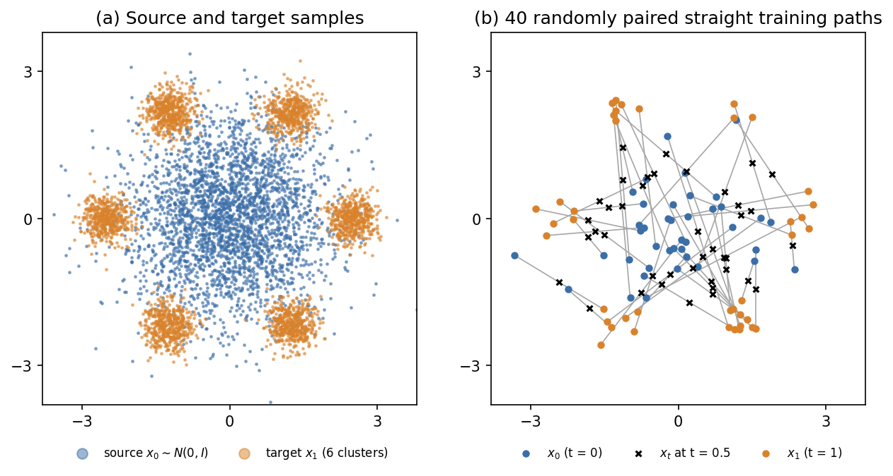
Why the velocity is constant along each path. x_t = (1 − t)x₀ + t·x₁ is a linear function of t, so its derivative is dx_t/dt = x₁ − x₀, which contains no t. Every training point moves along a straight line at constant speed, reaching x₁ at exactly t = 1. As a numerical check, a finite difference of x_t at t = 0.1, 0.5, and 0.9 matched x₁ − x₀ to within 10⁻⁹.
Task 2. Training the velocity model
The network receives only the current position x_t and the time t, never x₀ or x₁. It is trained to predict the path velocity x₁ − x₀. Because the pairs are random, many different training lines pass through almost the same (x_t, t) with different velocities, so no function of (x_t, t) can fit all of them. The best a squared-error regression can do is predict their average, E[x₁ − x₀ | x_t, t]. The spread around that average is irreducible, so the loss levels off well above zero.
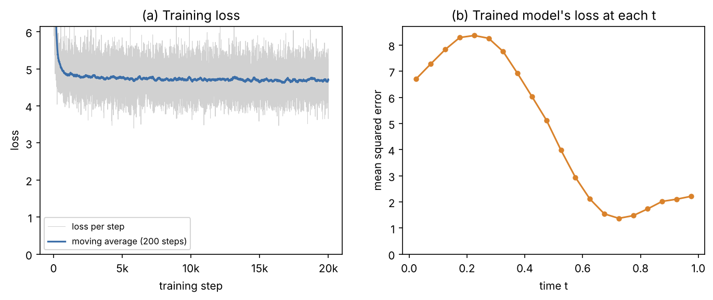
Figure 2(b) shows where the remaining error comes from. Near t = 0, x_t ≈ x₀ is known but the destination cluster is not, so the error (6.71) is close to the target's spread around its mean (2.5² + 2·0.25² ≈ 6.4). The error peaks around t ≈ 0.23, where neither endpoint can be inferred, and falls once the point's position reveals which cluster it is heading to. Near t = 1 the destination is clear but the starting noise x₀ is not, so the error approaches the Gaussian's total variance of 2 (measured 2.21). The loss is not supposed to reach zero.
Task 3. Generating new points with the learned field
I drew 4,000 fresh Gaussian points (seed 2) and followed the learned field with 100 forward Euler steps, without supplying any target endpoints.
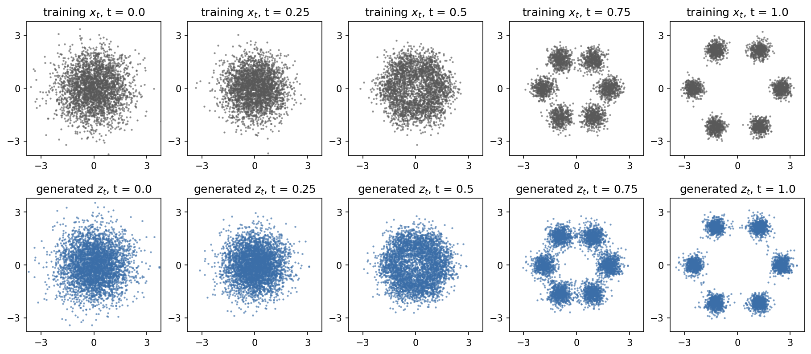
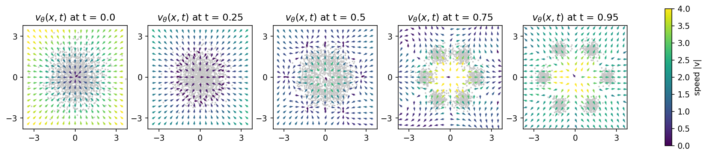
At t = 0 every arrow points toward the origin. There the network's best guess is E[x₁] − x₀, and the target's mean is the origin, so each point is sent toward the target's average location, not toward any particular cluster. As t increases, the field splits into six basins, and by t = 0.75 particles are pushed outward from the center into the nearest cluster.
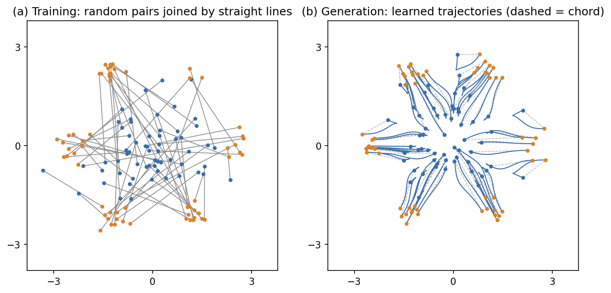
The learned trajectories are not straight. Each particle first drifts toward the center (following the averaged direction) and then bends toward one cluster once its position starts to favor one. Measured on the 100-step grid, the mean trajectory length is 1.649 and the mean excess over the straight start-to-end distance is 0.329 (0 for the training lines). Unlike the training lines, the learned trajectories do not cross: they come from following one velocity field, which gives a single direction at each place and time. Straight training paths do not produce straight sampling paths. The training lines only define the average field, and following that average field produces curved routes. As a distribution-level check, the TV distance between 20,000 generated points and 20,000 target samples was 0.099, compared with 0.061 between two independent target samples.
4. Part 2: Animated demo with my own logo
Task 1. Creative target: my initials logo
For the creative target I used a logo of my initials, A W, that I designed myself for an earlier typography project: four filled leaf-like strokes with a purple outline and a light-green fill. Source and permissions: it is my own original work, so no external material or licenses are involved. I rendered the first page of my logo PDF at 300 dpi and cropped it to the logo (1,046 × 373 pixels).
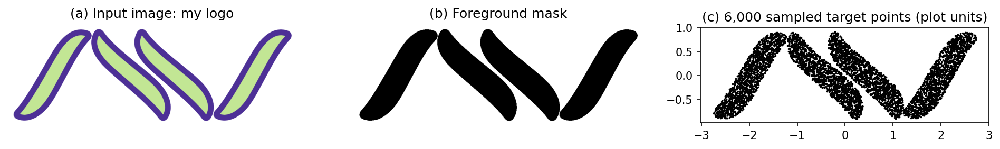
Sampling rule: pick one of the 131,299 foreground pixels uniformly at random, add uniform jitter inside that pixel so points are continuous, flip y (image rows grow downward), center the logo at the origin, and scale it so its width is 5.5 units (about [−2.75, 2.75] × [−0.9, 0.9]). I trained the same architecture for 50,000 steps (54.9 s); the loss leveled off at 2.83. I trained longer than in Part 1 because the strokes are thin and close together.
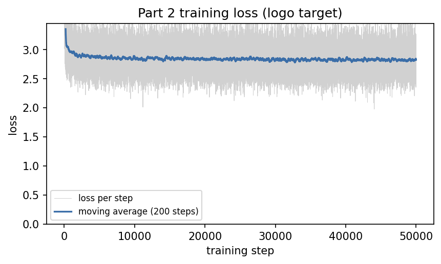
Task 2. Animating the learned transport
I sampled 3,000 new Gaussian particles, moved them through the learned field with 100 Euler steps, and stored every intermediate position, so the animation tracks the same particles from noise to logo (animation at the top of this page). Colors are assigned after sampling and used only for drawing. The network predicts coordinate velocities and never receives a color. I used two color schemes:
Source gradient
The hue is the angle of the particle's starting point around the origin. In the final frame, red and orange particles end on the left of the logo and blue and cyan particles on the right. Neighboring particles stay neighbors, so the learned flow behaves like a smooth deformation of the noise cloud rather than a shuffle.
Endpoint logo colors
Each particle takes the logo's color (purple outline or green fill) at the place it ends, and keeps it for the whole animation. Particles that end off the logo are gray. At t = 0 this shows which part of the noise feeds each stroke: the Gaussian is already split into four tilted bands, one per stroke.
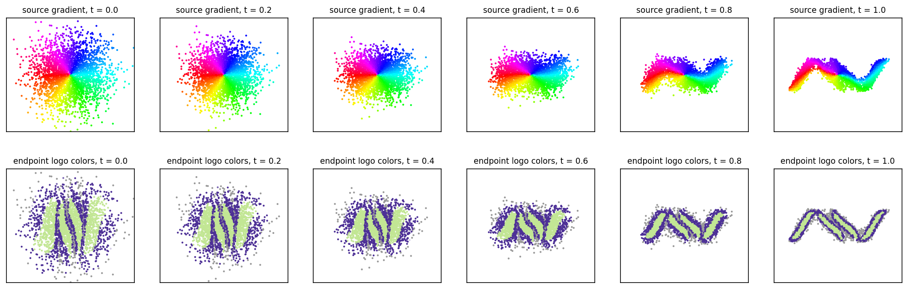
90.7% of the animated particles end on the logo. Most of the gray particles end in the narrow gaps between neighboring strokes. A smooth velocity field has to split one connected noise cloud into four separate pieces. Particles near the borders between the bands are pulled two ways and stay between the strokes. The animation thus shows a limitation of the small model, not just a pretty picture.
Task 3. The sampling trade-off: number of Euler steps
With the trained weights and the same 20,000 starting Gaussian samples (seed 4) fixed, I compared K = 1, 2, 5, 10, 25, 50, 100, and 200 Euler steps. The number of network evaluations (NFE) equals K. Sampling time is the median of five timed runs of the sampler alone, excluding plotting and rendering.
Quality check: I turned each point cloud into a histogram on one fixed 35 × 35 grid covering [−3.5, 3.5]² (cells of 0.2 units), plus one extra bin for points outside that square, so escaped points still count. I then computed the total-variation distance TV = ½ Σ |p − q| to a histogram of 20,000 independent target samples (seed 5). This compares distributions, not individual points. The TV between two independent target samples, 0.047, is the sampling-noise floor. I also report the TV between each K-step result and the 200-step result from the same starting points, which isolates the error caused by the step size.
| Steps K | NFE | Sampling time (ms) | TV vs. target | TV vs. 200 steps | On logo | Outside grid |
|---|---|---|---|---|---|---|
| 1 | 1 | 7.0 | 0.980 | 0.978 | 27.1% | 0.0% |
| 2 | 2 | 12.7 | 0.675 | 0.666 | 70.1% | 0.0% |
| 5 | 5 | 29.5 | 0.330 | 0.307 | 86.8% | 0.0% |
| 10 | 10 | 64.2 | 0.182 | 0.140 | 90.1% | 0.0% |
| 25 | 25 | 206.6 | 0.120 | 0.055 | 90.2% | 0.0% |
| 50 | 50 | 402.4 | 0.110 | 0.027 | 90.0% | 0.0% |
| 100 | 100 | 897.6 | 0.104 | 0.013 | 89.8% | 0.0% |
| 200 | 200 | 1373.2 | 0.102 | 0.000 | 89.7% | 0.0% |
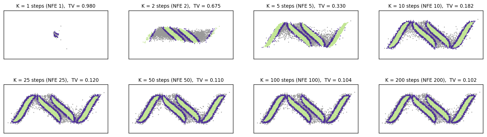
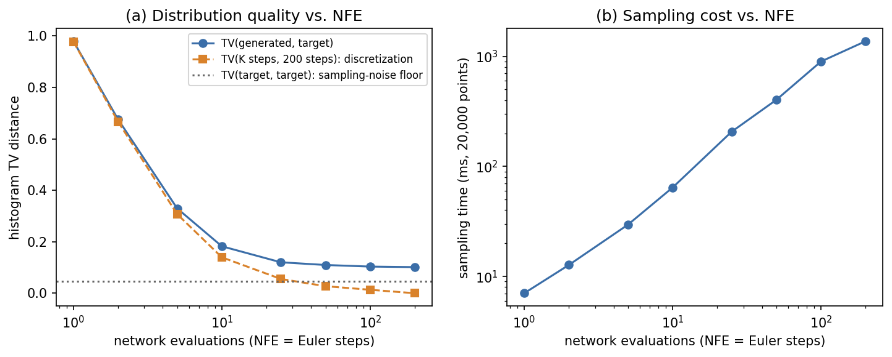
What changes with fewer steps
With one step, every particle lands near the center (TV 0.980). At t = 0 the field points from each particle toward the target's average location (as in Figure 4), so a single full-length step sends everything there. With 2 and 5 steps the logo appears but is smeared, because each step follows a direction that is only correct at the start of the step. Fewer steps are faster: the cost is about 6.9 ms per step for 20,000 points.
What more steps cannot fix
From about 25 steps on, the result barely depends on K: the TV to the 200-step result (0.055 at K = 25) is near the noise floor, while the TV to the target levels off at about 0.104, roughly twice the floor of 0.047. The on-logo fraction plateaus near 89.8%. This remaining error is model error: blurred edges and particles stuck between strokes (Figure 9) come from the learned field itself, so smaller steps cannot remove them.
Some differences also come from the target representation and the metric. The target is a rasterized, cropped image sampled uniformly over non-white pixels, so anti-aliased edge pixels darker than the threshold are part of the target. The 0.2-unit histogram cells are coarser than the logo's outline, so the TV cannot tell outline from fill. The on-logo fraction checks precision more finely, but on its own it would reward samples that collapse onto a small part of the logo, which is why I use it alongside TV and not instead of it. No points left the grid at any step count. For this model, about 25 steps gives nearly the 200-step quality for 15% of the 200-step sampling time.
5. Discussion and Conclusion
A 33,794-parameter MLP, trained on a CPU in 24 s (Part 1) and 55 s (Part 2), learned velocity fields that move Gaussian noise into both a six-cluster target and my own logo. The experiments separate three ideas. First, the training targets are straight lines with constant velocity, but because the pairs are random, the network learns their average direction, and the loss stays far above zero. Second, following that averaged field produces curved, non-crossing trajectories whose point clouds still match the training interpolation at every time (Figure 3). Third, the number of Euler steps controls the step-size error, and that error is small by about 25 steps, while the remaining gap to the target comes from what the network learned.
References
Y. Lipman, R. T. Q. Chen, H. Ben-Hamu, M. Nickel, M. Le. Flow Matching for Generative Modeling. ICLR 2023.
X. Liu, C. Gong, Q. Liu. Flow Straight and Fast: Learning to Generate and Transfer Data with Rectified Flow. ICLR 2023.
Y. Lipman et al. Flow Matching Guide and Code. 2024.
The code notebooks are submitted privately with the course assignment; this public website contains only the report and its figures. The logo is my own design.